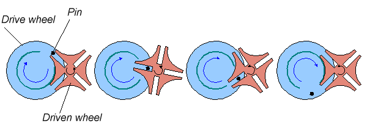
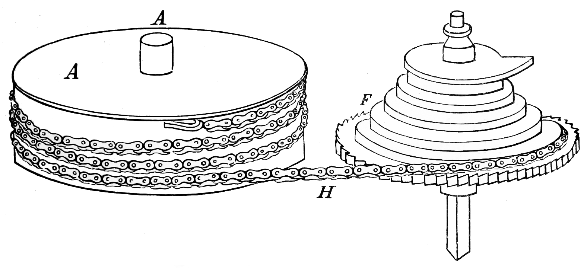

Le schéma bloc définit l'architecture fonctionnelle fondamentale de la montre mécanique à remontage manuel. L'énergie accumulée est transmise, distribuée et régulée de façon continue :
Étape 1 : Énergie
Le Ressort & Le Barillet
Le moteur de la montre. Le ressort-moteur, logé à l'intérieur du tambour (1), emmagasine l'énergie mécanique lors de l'armage.
Étape 2 : Transmission
Le Rouage de Finissage
La démultiplication de la force. Le train d'engrenages (2) achemine l'énergie.
Étape 3 : Distribution
L'Échappement
Le convertisseur cinématique. La roue d'échappement (3) transforme le mouvement rotatif continu en impulsions.
Étape 4 : Régulation
L'Oscillateur
Le cœur isochrone. L'ensemble balancier-spiral (4) dicte le rythme absolu.
1
2
3
4
5
8
9
⚙️
1 Barillet
2 Roue de centre
3 Roue de troisième
4 Roue de seconde
5 Roue d'échappement
8 Balancier
9 Spiral
⚙️ Mécanisme de remontoir
📷 FEUILLET MANUSCRIT ORIGINAL (01-02) — Schéma Bloc & Introduction
2. Organe Moteur (Énergie) : Le Barillet & Systèmes de Remontage
Le barillet est le composant central du stockage d'énergie potentielle du mouvement mécanique. L'ensemble est constitué de quatre éléments fondamentaux :
Le Tambour : Boîte cylindrique abritant le ressort et portant la denture extérieure qui engrène avec le pignon de centre.
Le Ressort-moteur : Lame élastique enroulée à l'intérieur, dont l'extrémité extérieure est fixée à la paroi du tambour.
L'Arbre de barillet : Axe pivotant entre le pont et la platine, muni d'une bonde avec crochet pour l'attache intérieure du ressort.
Le Couvercle : Élément de fermeture qui assure le guidage axial de l'arbre et protège le mécanisme des poussières.
1. Arbre & Pignon
1. Tambour & Roue
1. Ressort-moteur
1. Couvercle
0%
📷 VUE TECHNIQUE 3D — Anatomie du barillet avec labels dynamiques.
4.1 Généralités et Rôle de l'Accumulateur d'Énergie
Dans l'architecture d'un mouvement mécanique, l'énergie initiale est apportée par l'utilisateur lorsqu'il manipule la couronne de remontoir pour armer le ressort de barillet. Le système fonctionne ainsi comme un accumulateur d'énergie cinétique convertie en énergie potentielle élastique.
La chaîne fonctionnelle classique de l'horlogerie se décompose en cinq grands sous-ensembles :
Source d'énergie : Armage manuel ou automatique.
Accumulateur : Barillet et son ressort.
Comptage et Transmission : Rouage.
Distribution : Échappement.
Régulation & Affichage : Organe réglant et affichage de l'heure.
4.2 Le Barillet et son Ressort
4.2.1 Descriptif technique de l'assemblage
L'ensemble du barillet est généralement composé de quatre éléments fondamentaux :
Tambour de barillet : Boîte cylindrique abritant le ressort et servant de pivotement à l'arbre. Une encoche ou un dégagement sur le diamètre intérieur permet d'accrocher l'extrémité du ressort pour assurer l'entraînement du tambour.
Ressort de barillet : Lame élastique enroulée à l'intérieur du tambour.
Arbre de barillet : Axe pivotant entre le pont et la platine, comportant une bonde munie d'un crochet pour fixer l'attache intérieure du ressort.
Couvercle de barillet : Élément de fermeture de la boîte qui participe également au guidage et au pivotement de l'arbre.
4.2.2 Principe physique et évolution géométrique
Le ressort se présente sous la forme d'une lame à section rectangulaire. En cherchant à reprendre sa forme initiale après avoir été enroulé serré autour de la bonde de l'arbre, il produit le couple nécessaire au fonctionnement du mouvement.
Historiquement, la géométrie du ressort a évolué d'un enroulement spiralé classique vers la forme en S inversé (ou bride à retour), optimisée en fonction de la limite d'élasticité du matériau pour garantir une restitution d'énergie plus linéaire. La denture périphérique du tambour transmet directement ce couple au rouage de minuterie et de moyenne.
4.3 Analyse Cinématique : Nombre de Tours et États du Ressort
Pour modéliser le comportement du ressort, on distingue trois états fondamentaux de développement :
N'' : Nombre de tours du ressort entièrement armé (enroulé serré autour de la bonde).
N' : Nombre de tours du ressort détendu à l'intérieur du tambour (en appui contre la paroi interne R).
N₀ : Nombre de tours théorique du ressort à l'état libre (détendu hors du barillet).
La différence entre l'espace de la bonde (r) et le rayon interne du tambour (R) est calculée pour réserver environ 50 % de surface occupée et 50 % de surface libre, maximisant ainsi la capacité d'accumulation d'énergie.
Formules fondamentales de développement :
Nombre de tours de développement total (ΔN_t) :
ΔN_t = N'' - N₀
Nombre de tours utiles dans le barillet (ΔN_u) :
ΔN_u = N'' - N'
4.4 Paramètres de Conception et Formules d'Ingénierie
4.4.1 Longueur théorique du ressort
La longueur active L du ressort dépend de la géométrie du tambour et de la bonde :
L ≈ (R² - r²) / (2 · e)
(Note empirique d'atelier : pour optimiser l'énergie réelle, cette longueur théorique est généralement majorée de 10 % à 33 % selon les dimensions du mouvement).
4.4.2 Moment de force maximal (M_opmax)
Lorsque le ressort est complètement armé autour de la bonde, le moment de force maximal se calcule via l'expression :
M_opmax = (E · h · e³) / (12 · L) · 2π · ΔN_t
Où :
E = Module d'élasticité du matériau (2,2 × 10⁵ à 2,3 × 10⁵ MPa ou N·mm⁻²).
h = Hauteur (largeur) de la lame du ressort [mm].
e = Épaisseur de la lame [mm].
L = Longueur du ressort [mm].
Δ N_t = Nombre de tours de développement total.
4.4.3 Propriétés de la Matière
Les ressorts modernes de haute horlogerie utilisent des alliages à durcissement structural à base de cobalt, nickel et chrome (ex. Nivaflex). Ces matériaux amagnétiques offrent une ductilité élevée, une résistance à la corrosion et supportent de fortes contraintes élastiques sans déformation plastique permanente.
Tension limite admissible (σ_max) : Comprise entre 2840 MPa et 3340 MPa selon les grades.
3. Fixation du Ressort & Régulation de Couple

📷 SCHÉMA TECHNIQUE — La Croix de Malte : blocage de la rotation pour l'exploitation de la plage de couple linéaire.
📷 FEUILLET MANUSCRIT ORIGINAL (01-03) — Fixation du Ressort, Croix de Malte & Fusée

Force Constante : La Fusée-Chaîne
Ce mécanisme historique agit comme une boîte de vitesses à variation continue pour compenser la perte de couple du ressort moteur au fur et à mesure de son désarmage.
Armage maximal : Le ressort est fort, la chaîne tire sur le petit diamètre de la fusée (bras de levier court).
Désarmage : Le ressort s'affaiblit, la chaîne tire sur le grand diamètre de la fusée (bras de levier long), égalisant ainsi parfaitement la force transmise à l'échappement.


.jpg)